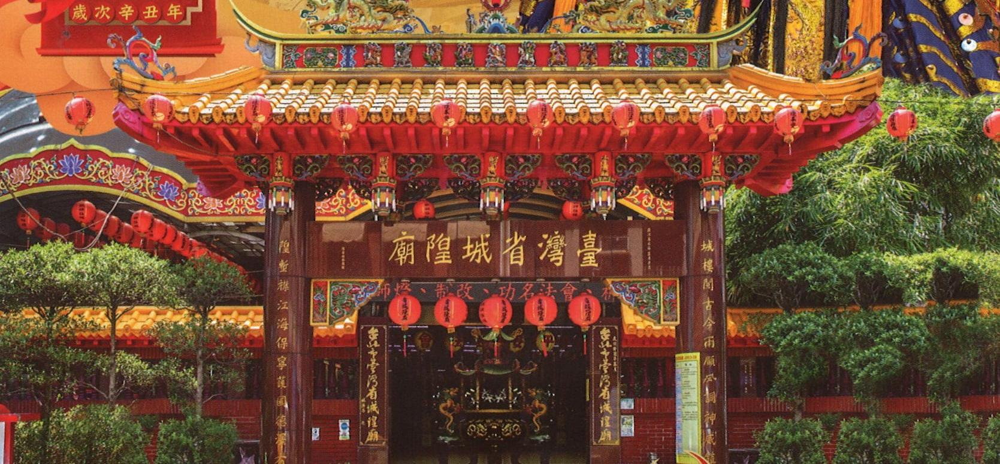

.png)
致中和，萬物生生不息，這是和平世界共同的理想。可知「和」字沒有反面詞，即使「不和」已非一字詞。但諸如「善」反面「惡」；「正」反面「邪」；「白」反面「黑」。
去惡從善，是社會倫理的目的，大家才能和睦共處。至於如何才能達到去惡從善的目的，群居社會就要訂出遵循的辦法。明清時代，帝制如何保持長治久安，官僚體系想出一套統治的方法。無論從軍事、內政、經濟、法律、文化、宗教、……其措施都是配合治安的目的。
明代想出把內政和宗教結合作出的治安方法，即設地方官僚體系，由皇帝指派地方官，依階級層層管控。地方依郡縣派官員理治，並設城隍爺協治。明太祖洪武二年從中央到地方分設京都都城隍「昇福明靈王」，省都府城隍「威靈公」、州城隍「靈佑侯」，縣廳城隍「顯佑伯」，堡街鎮邑「境主」。清代沿明代體制，都、府、州、縣依等級建城隍廟，並規定新官上任須「前期一日，宿城隍廟。至期，祀神畢，鼓樂綵仗，吏胥人役引導至衙。」告誡官員應奉公守法，清廉從政，以免遭受城隍糾舉與懲罰，同時可請城隍祈雨、祭厲。
清代光緒年間臺灣省會確認設在臺北府城。依《欽定大清會典》，省會必設壇廟，壇包括：山川壇、社稷壇、北壇（厲壇）、先農壇等。廟包括：文廟（孔廟）、武廟（關廟）、城隍廟、天后宮等。臺灣省城隍威靈公亦依規制建立，地址在臺北城（今漢口街∕中華路口）。
二次大戰結束（1945），日本投降，國民政府接收，地方仕紳向當時市長索回臺灣省城隍廟舊址沒有結果，改撥清淡水縣署舊址城中區武昌街基地200坪，二層樓一棟，作為恢復城隍廟重新公開祭祀之用，即當今之臺灣省城隍廟現址。民國36年（1947）11月臺灣省城隍廟落成，但因座落地點受當時博愛特區管制，及政府倡行統一「祭典政策」故訂統一每年國曆10月25日臺灣光復節舉行祭典。
城隍一詞之意義，依《說文解字》曰：「城，以盛民也；隍，城池也，有水曰池，無水曰隍」。《周易》曰：「城復于隍」。可知城是人民所住的城廓，隍指的是擁護城之壕溝。一般所稱城池、城市是集中人口較多的居住所在。雖然漢代還沒有把城隍賦於神格化，但古天子的「八蜡」之祭，在八神當中就有水庸之神。水則隍也，庸則城也。水庸之神將演變成後世的城隍神信仰。
〈太上老君說城隍感應消災集福妙經〉，簡稱為〈城隍經〉，是以勸善消災集福為主的思想。其職能代天理物，剪惡除兇，護國保邦，功施社稷，溥降甘澤，普救生民，統轄十八真司，主管百萬神將，積功累行，位正城隍，權掌天下，威震萬邦。《城隍經》，約明代初年之作，撰人不詳，託古太上老君說禮拜城隍消災之法，一卷。本版取錄出自《道藏》。
城隍信仰各地傳承不一，方便各自表述。臺灣歷史由於有鄭氏與清治，漢人社會的城隍信仰受明清帝制影響。從明初欽定的城隍制度為準，尤其清代對臺灣設置的變遷，從府州縣，到後來建省，城隍體制也跟著改變，是當時官僚制度必然之現象。日治時代五十年，因官方不拜城隍，逐漸城隍信仰庶民化。當今臺灣各地城隍傳承歷史不一，以致各廟宇的規模不同，祭典儀式互異，演變到現在更是多元化。
1661年鄭成功趕走荷蘭人，把明代城隍的體制帶入臺灣，明末永曆23年（1669），鄭氏參軍陳永華建東寧府城隍（威靈公），為臺灣府第一座城隍廟。鄭氏三代為時僅二十三年（1661～1683），政權版圖不大，只在西臺灣而已，因行政區之大小和城隍廟設置相關，故鄭氏在臺灣設城隍廟也有限。
以上數字迨至1895年清朝把臺灣割給日本，當時其行政規制如下：一省、三府、一州、十一縣、四廳。 從上述清治臺灣行政區，雖然其體制從：省、府、州、縣、廳必有大小城隍廟位階。但因行政區成立時間的長短，各地興建條件不一，興毀更替也不同，幾乎各地各階級的城隍廟都有各自表述的歷史。
民間習俗傳統上城隍位階以廟為主。故臺灣省城隍廟己在光復後擇地恢復公開祭祀，法統由當今的財團法人臺灣省城隍廟繼承。根據內政部編印《全國寺廟名冊 》（2004） 統計，全臺灣城隍廟有五十座。換言之，全臺灣有五十座宮廟主神是城隍爺，還不包括其他宮廟有拜城隍爺為配祀神者。由此可說明當今的城隍廟或拜城隍爺，已不是明清時代地方官員把祀典功能，而變成為民主時代的司法神，不少是民間自己興建的，乃至於分靈式的。民間祀城隍廟目的在於息災賜福伸張正義。反過來說，在民主自由的臺灣，把本來是帝制做為政治工具的城隍爺，轉換成法治社會的司法神。所以，我們如以宗教信仰去探討城隍，也可區分出城隍信仰的功能轉換沿革如下：
城牆溝池是保護民生住的安全，凡是能「保國衛民」者，都可當神明供奉。
因在世為民除害受人民尊敬，逝世被供奉為神仙者，把城隍當做是「勸善消災集福」的崇拜象徵，猶如《道藏》的（太上老君說城隍戚應消災集福妙經〉簡稱〈城隍經〉所描）所描述的城隍尊神。
明清帝王把城隍視為地方官階，列為帝制差遣工具，如地方官爵號等級。地方新官上任要先到同官階的城隍廟去告祭城隍，如知縣要到縣城隍廟，告誡今後為官要清廉。城隍廟如同縣衛門，建築與排場去也如同知縣上朝模樣。明幽二界城隍都可發揮監督功能，但只要人間界是地方官主治，鬼神界由城隍主治，盡忠職守，代表帝王統治的目的。對孤魂野鬼無人奉祀，由城隍做主，設厲壇祭祀。
到了民主、自由、法治的時代，人人要守法，大家才能和平共處。所以，行政、立法、司法三權分立，維繫一個國家民主的制度。因此，一個民主社會，司法公正仲裁，人人互信至為重要。城隍成為擔當司法神的職能，補司法仲裁之不迨。當人民互信發生置疑，變成人與人信任發生猜疑，彼此可到城隍廟，向城隍爺發誓，可達警惕作用。換言之，為使猜忌得到信任，往往可到城隍面前發誓，也是解決糾紛的見證者。
@2X.png)